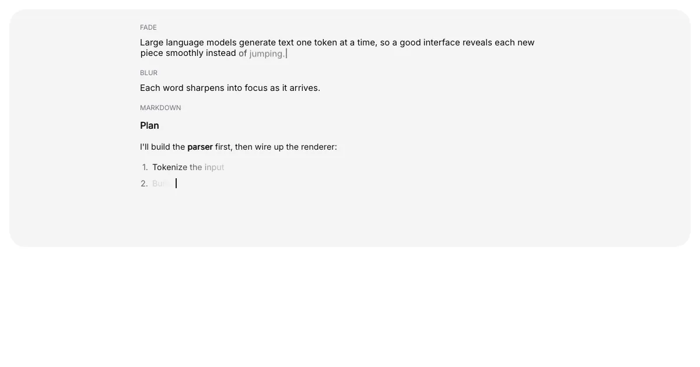

Streaming Response
Reveals a response token by token with a per-token fade and a blinking caret; works for plain text or live Markdown.

Usage
Add glowkit next to eframe:
cargo add glowkit eframeThen draw it inside any egui Ui:
use glowkit::prelude::*;
use glowkit::ai::StreamingText;
ui.add(StreamingText::new(text).tokens_per_second(14.0));
ui.add(StreamingText::new(markdown).markdown(true).progress(p));Prefer to own the code? The glowkit CLI copies this component's source into your project, shadcn-style:
cargo install glowkit-cli
glowkit add ai-streaming-textEquivalent to
If you know this pattern from Vercel AI Elements, prompt-kit, Kibo UI, llm-ui and ElevenLabs UI, Streaming Response is the Rust version: an original egui implementation, not a port, that runs natively and in WebAssembly.
- ResponseVercel AI Elements
- Response Streamprompt-kit
- AI ResponseKibo UI
- Streamingllm-ui
- ResponseElevenLabs UI
About Streaming Response
Streaming Response is one of 84 components in glowkit's AI category. It lives in the glowkit-ai crate, enabled by the ai feature of glowkit (on by default). It reads its colors from the active glowkit theme, so it matches the rest of your app in light, dark or a custom brand theme, and every color, size and timing has a setter to override it.
Everything an AI app needs on screen: streaming Markdown chat, prompt inputs with attachments, reasoning and chain-of-thought panels, tool calls with live arguments, approvals, diff review, traces, agent trees, run monitors, cost and context meters, voice orbs and MCP server managers. Pair them with glowkit-stream to drive them from a real AG-UI, Vercel AI SDK, ACP, rig or OpenAI-compatible stream.